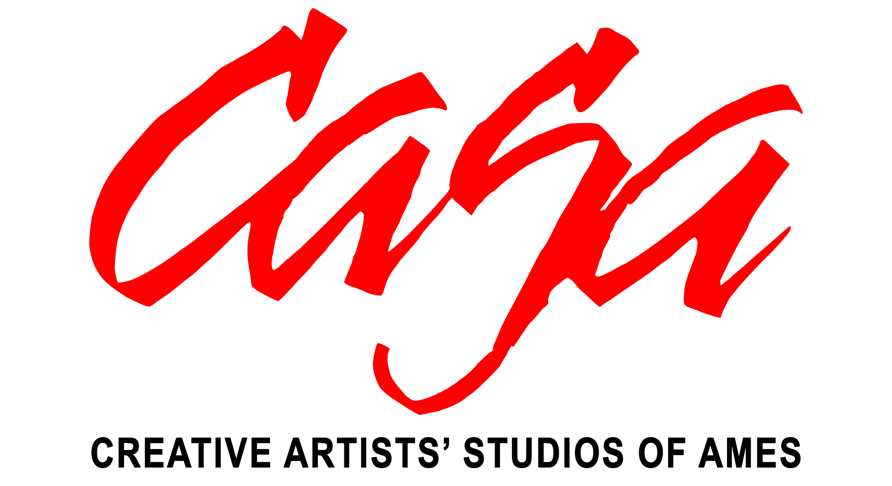
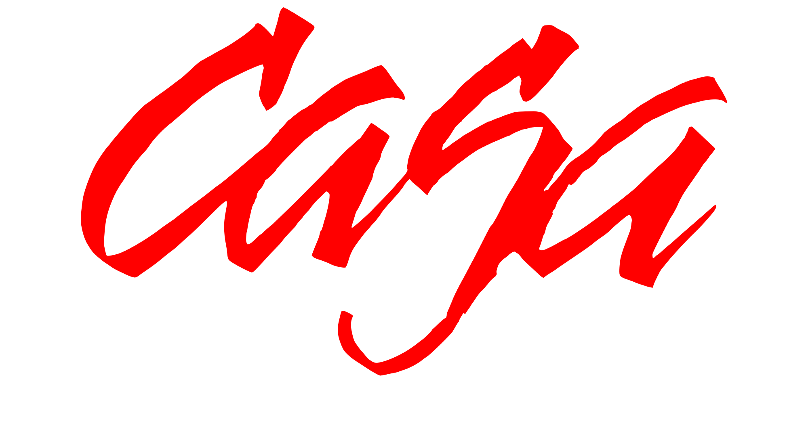
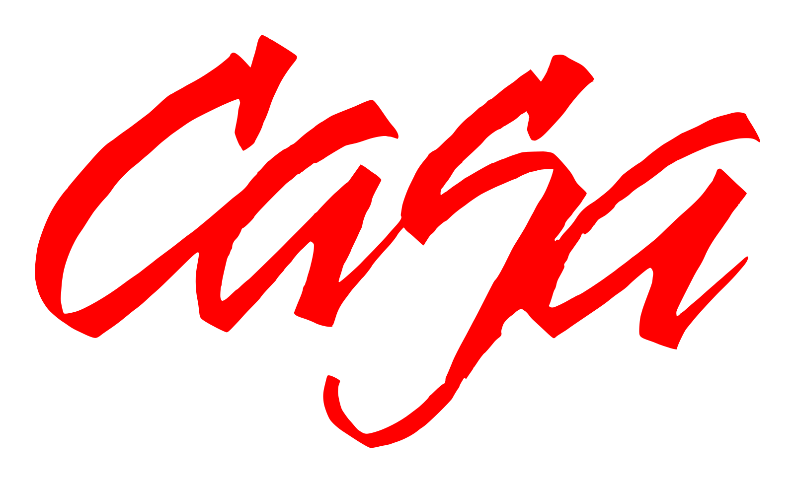
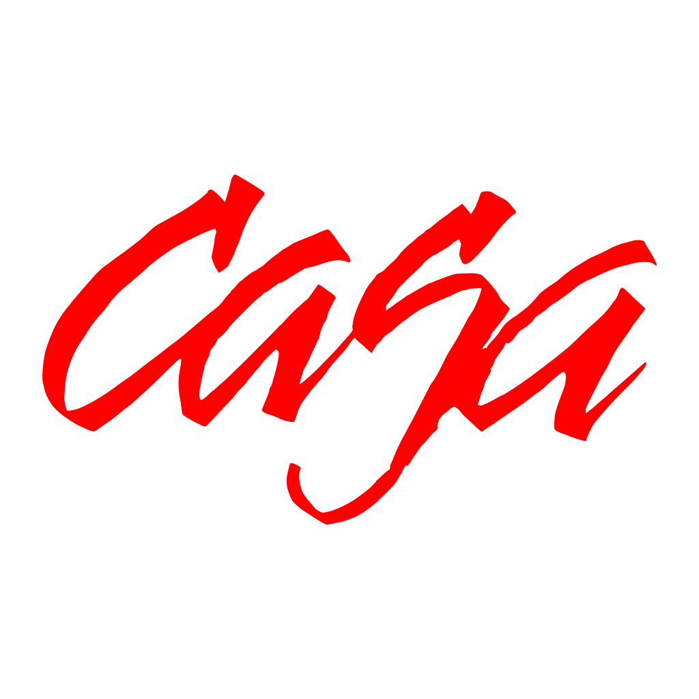
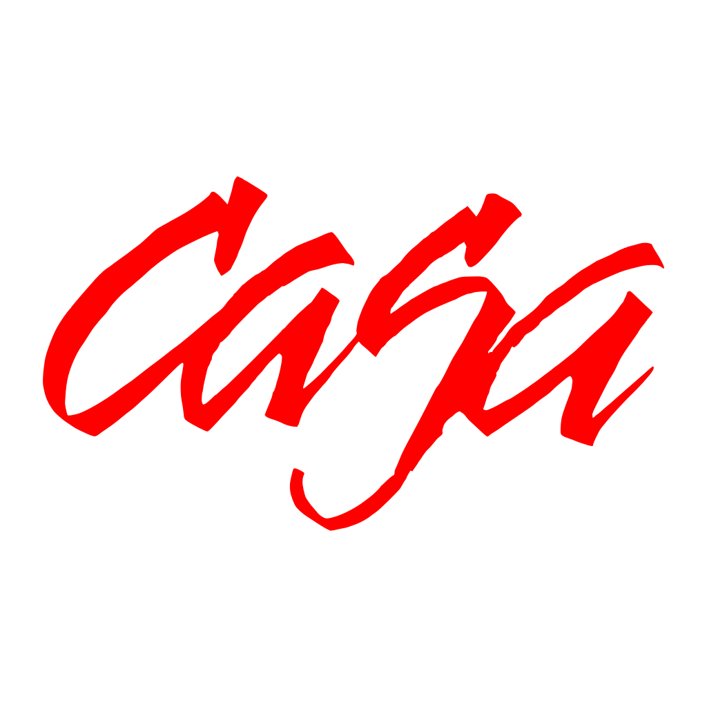

CASA logo system
proposal 01
The original brush-script silhouette is preserved as vector paths. The organization name is outlined, so these files remain consistent without requiring a font installation.
Approved wide lockups

casa-lockup-wide-red-black-transparent.svgcasa-lockup-wide-red-black-on-white.svg
casa-lockup-wide-red-white-transparent.svgcasa-lockup-wide-red-white-on-black.svg
casa-lockup-wide-white-transparent.svgcasa-lockup-wide-white-on-black.svgSupporting mark and small-format assets

casa-mark-red-transparent.svg
casa-mark-white-transparent.svg
casa-favicon-red-transparent.svg
casa-social-avatar-red-on-white.svg